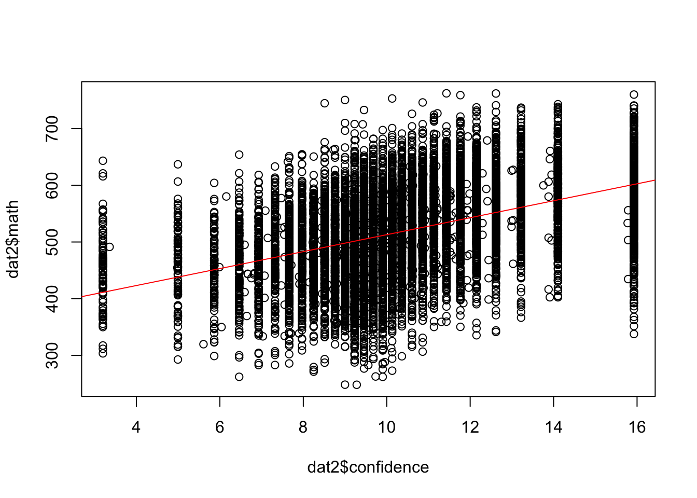
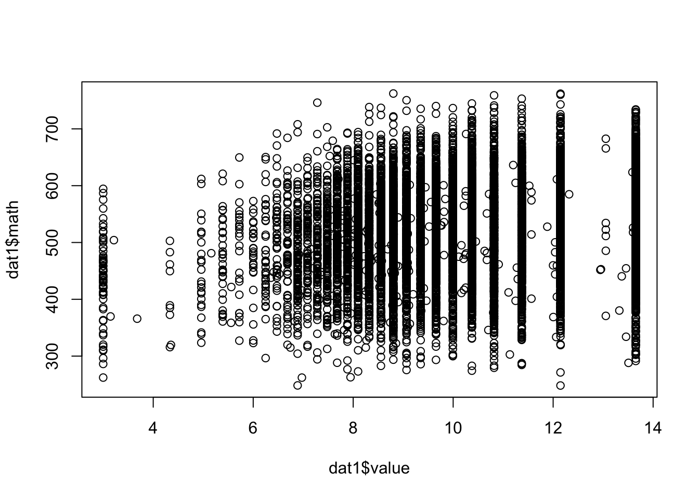
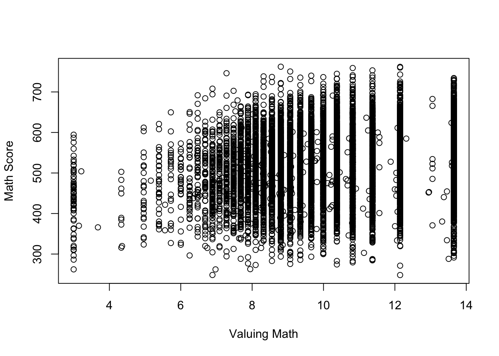
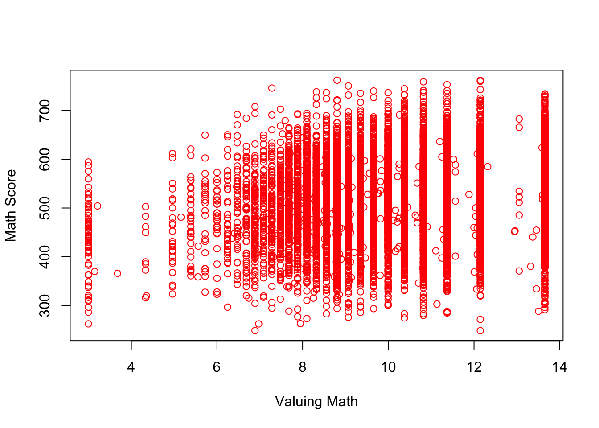
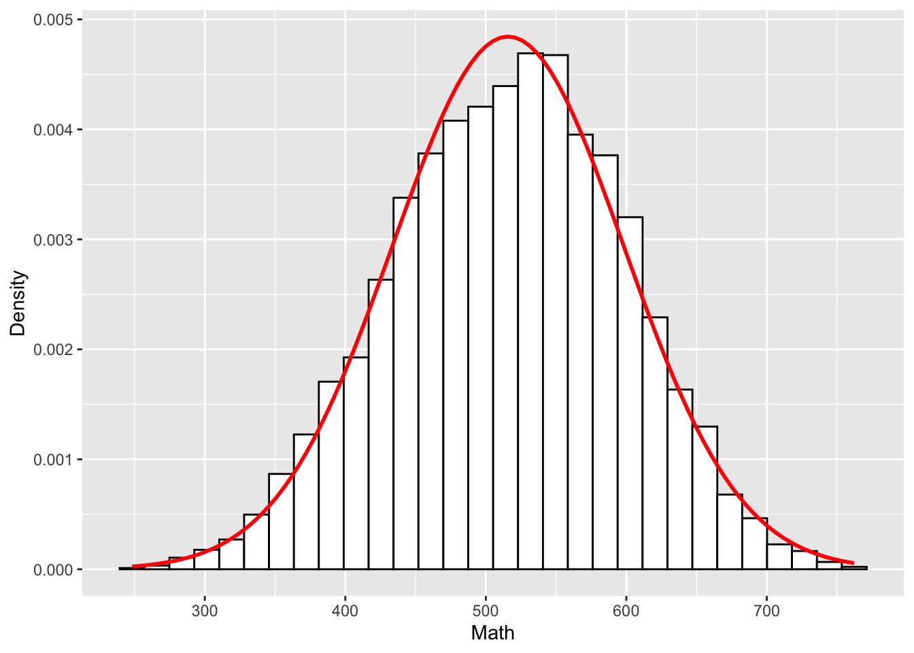
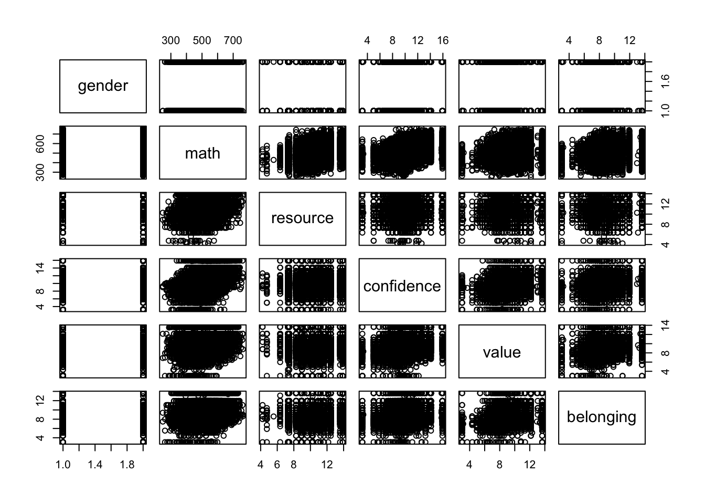
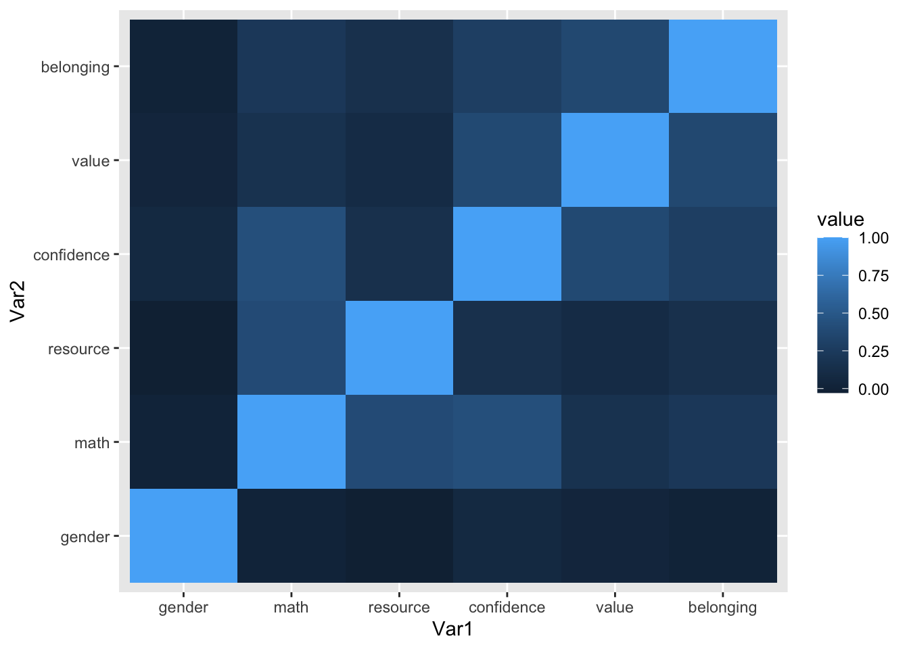
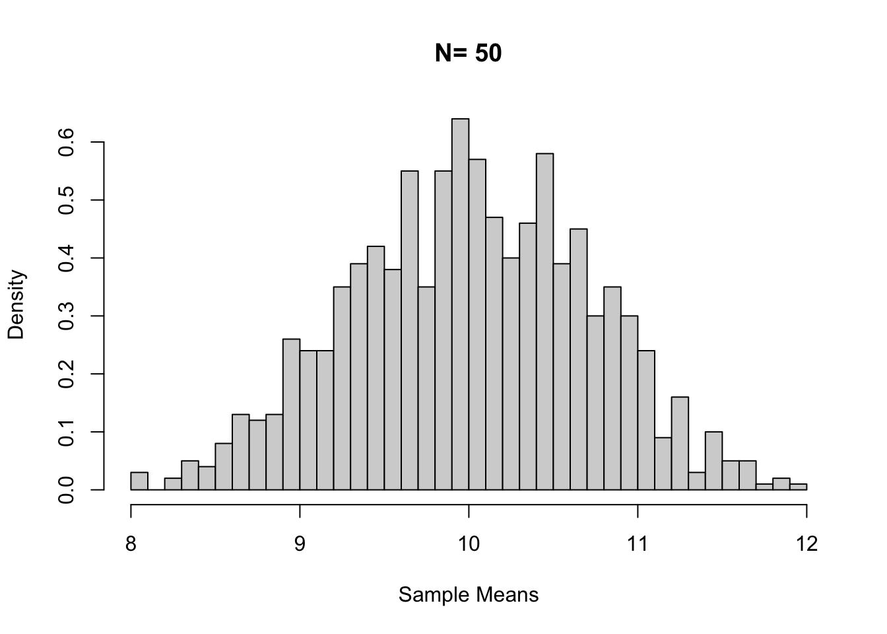
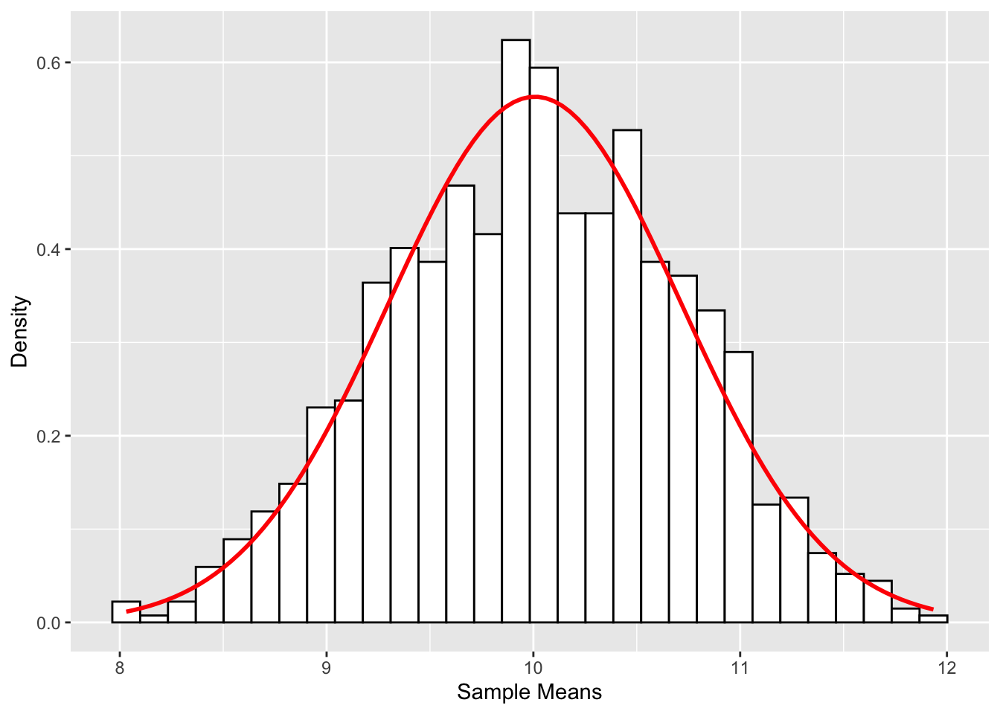

library(rio); library(psych); library(Hmisc); library(ggplot2); library(reshape2); library(QuantPsyc); library(MASS); library(lavaan)2 Review of Basic Statistics
2.1 Calculating Variance and Covariance
2.1.1 Covariance
population: \[{{\sigma }_{\text{XY}}}=\frac{\sum{(X-{{\mu }_{\text{X}}})(Y-{{\mu }_{\text{Y}}})}}{{{N}_{pop}}}\] sample: \[{{s}_{XY}}={{\hat{\sigma }}_{XY}}=Cov(X,Y)=\frac{\sum{(X-\bar{X})(Y-\bar{Y})}}{(n-1)}\]
2.1.2 Correlation
population: \[{{\rho }_{\text{XY}}}=\frac{{{\sigma }_{\text{XY}}}}{\sqrt{{{\sigma }_{\text{X}}}^{2}{{\sigma }_{\text{Y}}}^{2}}}\]
sample: \[{{r}_{\text{XY}}}={{\hat{\rho }}_{\text{XY}}}=\frac{Cov(X,Y)}{\sqrt{{{s}_{\text{X}}}^{2}{{s}_{\text{Y}}}^{2}}}\]
2.1.3 Using Matrix Algebra
Suppose we have a 5 by 2 data matrix X (2 variables and 5 participants, for example). $${} = $$
First, we calculate the deviation score matrix \({{\bf{X}}_{\bf{d}}}\).
\[{{\mathbf{X}}_{d}}\text{=}\mathbf{X-\bar{X}}=\left[ \begin{matrix} 1 & 3 \\ 4 & -5 \\ 1 & 7 \\ 3 & 2 \\ 7 & -1 \\ \end{matrix} \right]-\left[ \begin{matrix} 3.2 & 1.2 \\ 3.2 & 1.2 \\ 3.2 & 1.2 \\ 3.2 & 1.2 \\ 3.2 & 1.2 \\ \end{matrix} \right]=\left[ \begin{matrix} -2.2 & 1.8 \\ 0.8 & -6.2 \\ -2.2 & 5.8 \\ -0.2 & 0.8 \\ 3.8 & -2.2 \\ \end{matrix} \right]\]
Next, we multiple the transpose of \({{\bf{X}}_{\bf{d}}}\) ( \({{\bf{X}}_{\bf{d}}}^{\bf{'}}\) ) by \({{\bf{X}}_{\bf{d}}}\) itself using matrix operations. We will get the deviation SSCP (sums of squares and cross products) matrix.
Deviation SSCP matrix:
\[{{\mathbf{X}}_{\mathbf{d}}}'{{\mathbf{X}}_{\mathbf{d}}}=\sum{{{x}_{i}}{{x}_{j}}=\left[ \begin{matrix}
\sum{x_{1}^{2}} & \sum{{{x}_{1}}{{x}_{2}}} \\
\sum{{{x}_{2}}{{x}_{1}}} & \sum{x_{2}^{2}} \\
\end{matrix} \right]}=\left[ \begin{matrix}
24.8 & -30.2 \\
-30.2 & 80.8 \\
\end{matrix} \right]\] (Note: Lower case \({{x}_{i}}\)’s represent deviation scores.)
Since variance of of the first variable \(X_1\) is \(\frac{1}{N-1}\sum{x_{1}^{2}}\) and the covariance between \(X_1\) and \(X_2\) is \(\frac{1}{N-1}\sum{{{x}_{1}}{{x}_{2}}}\), the variance and covariance matrix (usually denoted by S) can be obtained by multiplying \(\frac{1}{N-1}\) to the deviation score SSCP:
Variance and Covariance matrix: \[\mathbf{S}=\frac{1}{5-1}\left[ \begin{matrix} 24.8 & -30.2 \\ -30.2 & 80.8 \\ \end{matrix} \right]=\left[ \begin{matrix} 6.2 & -7.55 \\ -7.55 & 20.2 \\ \end{matrix} \right]\]
$${}$$
Sample Covariance Matrix S
$${}$$
Sample Correlation R $${}$$
Elements in sample covariance matrix divided by \({s_i}{s_j}\) would result in the sample correlation matrix.
Elements in sample correlation matrix multiplied by \({s_i}{s_j}\) would result in the sample covariance matrix.
2.2 Use R for Basic Statistics
2.2.1 Import and export data
mydata <- import("data/example.sav")
# head(mydata) # view first 6 observationsexport(mydata, file = "data/dataset_example.csv")
export(mydata, file = "data/dataset_example.xlsx")2.2.2 Several functions for basic data management
names(mydata)[names(mydata) == "ITSEX"] <- "gender" #rename a variable
names(mydata)[names(mydata) == "BSMMAT01"] <- "math" #rename another variable for math score
names(mydata)[names(mydata) == "BSBGHER"] <- "resource" #education resource
names(mydata)[names(mydata) == "BSBGSCM"] <- "confidence" #confidence in math
names(mydata)[names(mydata) == "BSBGSVM"] <- "value" #valuing math
names(mydata)[names(mydata) == "BSBGSSB"] <- "belonging" #sense of belonging
var <- c("gender", "math", "resource", "confidence", "value", "belonging")
dat1 <- mydata[, var] #subset data
dat2 <- na.omit(dat1) #listwise deletion
dat1$gender_c <- factor(dat1$gender) #create a categorical variable for `gender`
levels(dat1$gender_c) <- c("f", "m") #change levels for `gender` variable2.2.3 Some descriptive statistics
summary(dat1)
table(dat1$gender_c) #compute frequencies for categorical variables
psych::describe(dat1) #compute descriptives for quantitative variables. Need to install and load the `psych` package
attach(dat1) # save some typing. Alternatively, `math <- dat1$BSMMAT01` to create a separate vector.
min(math, na.rm = TRUE)
max(math, na.rm = TRUE)
sum(math, na.rm = TRUE)
mean(math, na.rm = TRUE)
median(math, na.rm = TRUE)
var(math, na.rm = TRUE)
sd(math, na.rm = TRUE)
sd(math, na.rm = TRUE)
quantile(math, na.rm = TRUE)
detach(dat1)2.2.4 Check normality
shapiro.test(dat1$math)You got an error message.
The Shapiro-Wilk test is for small to moderate samples.
set.seed(12345) #for reproducibility
selected <- sample(nrow(dat1), 100) #randomly selection 100 numbers from 1 through the sample size
dat1_small <- dat1[selected,] #create a smaller dataset of 100 students
shapiro.test(dat1_small$math)
Shapiro-Wilk normality test
data: dat1_small$math
W = 0.97872, p-value = 0.10562.2.5 Check linearity
plot(dat2$confidence, dat2$math)
abline(lm(math ~ confidence, data =dat2), col = "red")
2.2.6 Pearson’s product moment correlation
Correlation between two variables, hypothesis test, and confidence interval.
cor.test(dat1$resource, dat1$math)
Pearson's product-moment correlation
data: dat1$resource and dat1$math
t = 42.923, df = 10116, p-value < 2.2e-16
alternative hypothesis: true correlation is not equal to 0
95 percent confidence interval:
0.3759021 0.4088708
sample estimates:
cor
0.3925126 All pairwise correlations.
cor(dat1[,var], use = "pairwise.complete.obs") #for numeric variables only; "gender" is still a numeric variable! gender math resource confidence value belonging
gender 1.000000000 0.01305597 -0.0281559 0.0719095 0.03690314 0.007168246
math 0.013055968 1.00000000 0.3925126 0.4280530 0.16511215 0.221113350
resource -0.028155898 0.39251256 1.0000000 0.1512655 0.10208246 0.152041678
confidence 0.071909498 0.42805300 0.1512655 1.0000000 0.37535602 0.280950896
value 0.036903141 0.16511215 0.1020825 0.3753560 1.00000000 0.366637734
belonging 0.007168246 0.22111335 0.1520417 0.2809509 0.36663773 1.000000000round(cor(dat1[,var], use = "pairwise.complete.obs"), 2) #round to 2 decimal places gender math resource confidence value belonging
gender 1.00 0.01 -0.03 0.07 0.04 0.01
math 0.01 1.00 0.39 0.43 0.17 0.22
resource -0.03 0.39 1.00 0.15 0.10 0.15
confidence 0.07 0.43 0.15 1.00 0.38 0.28
value 0.04 0.17 0.10 0.38 1.00 0.37
belonging 0.01 0.22 0.15 0.28 0.37 1.00Correlations and significance levels for the correlation matrix. Need to install and load the Hmisc package. Need to coerce from dataframe to matrix to get both a correlation matrix and p-values.
install.packages("Hmisc")
library(Hmisc)df <- as.matrix(dat1[,var]) # numeric variables only
rcorr(df) gender math resource confidence value belonging
gender 1.00 0.01 -0.03 0.07 0.04 0.01
math 0.01 1.00 0.39 0.43 0.17 0.22
resource -0.03 0.39 1.00 0.15 0.10 0.15
confidence 0.07 0.43 0.15 1.00 0.38 0.28
value 0.04 0.17 0.10 0.38 1.00 0.37
belonging 0.01 0.22 0.15 0.28 0.37 1.00
n
gender math resource confidence value belonging
gender 10217 10217 10117 10052 10014 10111
math 10217 10221 10118 10053 10015 10112
resource 10117 10118 10118 10017 9978 10073
confidence 10052 10053 10017 10053 10010 10035
value 10014 10015 9978 10010 10015 9998
belonging 10111 10112 10073 10035 9998 10112
P
gender math resource confidence value belonging
gender 0.1870 0.0046 0.0000 0.0002 0.4711
math 0.1870 0.0000 0.0000 0.0000 0.0000
resource 0.0046 0.0000 0.0000 0.0000 0.0000
confidence 0.0000 0.0000 0.0000 0.0000 0.0000
value 0.0002 0.0000 0.0000 0.0000 0.0000
belonging 0.4711 0.0000 0.0000 0.0000 0.0000 2.3 Use R for Graphing Data
2.3.1 Use plot()
Use browseURL("https://datalab.cc/rcolors") to view different colors and methods to refer to them. Use ?palette for palettes in R; use palette() for current palette
plot(dat1$value, dat1$math)
plot(dat1$value, jitter(dat1$math)) # add some random noise to Yplot(dat1$value, jitter(dat1$math), xlab = "Valuing Math", ylab = "Math Score") # change labels
plot(dat1$value, jitter(dat1$math), xlab = "Valuing Math", ylab = "Math Score", col = "red") # change color
2.3.2 Use ggplot2 package
Read Chapter 4 of textbook Field, Miles, Field (2012).
install.packages("ggplot2")
library(ggplot2)ggplot(dat1, aes(math)) +
theme(legend.position = "none") +
geom_histogram(aes(y = ..density..), colour = "black", fill = "white") +
labs(x = "Math", y = "Density") +
stat_function(fun = dnorm, args = list(mean = mean(dat1$math, na.rm = TRUE), sd = sd(dat1$math, na.rm = TRUE)), colour = "red", size = 1)Warning: Using `size` aesthetic for lines was deprecated in ggplot2 3.4.0.
ℹ Please use `linewidth` instead.Warning: The dot-dot notation (`..density..`) was deprecated in ggplot2 3.4.0.
ℹ Please use `after_stat(density)` instead.`stat_bin()` using `bins = 30`. Pick better value `binwidth`.
2.4 Use R to Graph a Correlation Matrix
2.4.1 Use plot()
plot(dat1[,var])
2.4.2 Use ggplot()
install.packages("reshape2")
library(reshape2)(cor_matrix <- cor(dat1[,var], use = "pairwise.complete.obs")) gender math resource confidence value belonging
gender 1.000000000 0.01305597 -0.0281559 0.0719095 0.03690314 0.007168246
math 0.013055968 1.00000000 0.3925126 0.4280530 0.16511215 0.221113350
resource -0.028155898 0.39251256 1.0000000 0.1512655 0.10208246 0.152041678
confidence 0.071909498 0.42805300 0.1512655 1.0000000 0.37535602 0.280950896
value 0.036903141 0.16511215 0.1020825 0.3753560 1.00000000 0.366637734
belonging 0.007168246 0.22111335 0.1520417 0.2809509 0.36663773 1.000000000(melt_cor_matrix <- melt(cor_matrix)) Var1 Var2 value
1 gender gender 1.000000000
2 math gender 0.013055968
3 resource gender -0.028155898
4 confidence gender 0.071909498
5 value gender 0.036903141
6 belonging gender 0.007168246
7 gender math 0.013055968
8 math math 1.000000000
9 resource math 0.392512564
10 confidence math 0.428053003
11 value math 0.165112146
12 belonging math 0.221113350
13 gender resource -0.028155898
14 math resource 0.392512564
15 resource resource 1.000000000
16 confidence resource 0.151265456
17 value resource 0.102082458
18 belonging resource 0.152041678
19 gender confidence 0.071909498
20 math confidence 0.428053003
21 resource confidence 0.151265456
22 confidence confidence 1.000000000
23 value confidence 0.375356020
24 belonging confidence 0.280950896
25 gender value 0.036903141
26 math value 0.165112146
27 resource value 0.102082458
28 confidence value 0.375356020
29 value value 1.000000000
30 belonging value 0.366637734
31 gender belonging 0.007168246
32 math belonging 0.221113350
33 resource belonging 0.152041678
34 confidence belonging 0.280950896
35 value belonging 0.366637734
36 belonging belonging 1.000000000ggplot(data = melt_cor_matrix,
aes(x = Var1, y = Var2, fill = value)) + geom_tile()
2.5 Use R to Generate Random Data
2.5.1 Sampling distribution
Generate data.
size <- 50
sample_means <- NULL
for (i in 1:1000) {
samp <- rnorm(size, 10, 5)
sample_means[i] <- mean(samp)
}Calculate the mean and SD of the sampling distribution.
mean(sample_means) # population mean is 10[1] 10.007sd(sample_means) # SD of the sampling distribution[1] 0.708293Use hist() to graph the sample means for sampling distribution.
hist(sample_means, breaks = 50, main = "N= 50", xlab = "Sample Means", probability = TRUE)
Use ggplot() to graph the sample means for sampling distribution.
df_sample_means <- data.frame(i = 1:1000, sample_means) # data for ggplot has to be a data frame.
ggplot(df_sample_means, aes(x = sample_means)) +
geom_histogram(aes(y = ..density..), colour = "black", fill = "white") +
labs(x = "Sample Means", y = "Density") +
stat_function(fun = dnorm, args = list(mean = mean(df_sample_means$sample_means, na.rm = TRUE), sd = sd(df_sample_means$sample_means, na.rm = TRUE)), colour = "red", size = 1)`stat_bin()` using `bins = 30`. Pick better value `binwidth`.
2.5.2 Simulate data from a model
####Simulate data based on a regression model####
Simple Linear Regression with 0.7 correlation between x and y
x <- rnorm(1000, 10, 2)
Zx <- scale(x)
Zy <- .7*Zx + rnorm(1000, 0, sqrt(1-(.7^2)))
y <- 3*Zy + 5
dat1 <- data.frame(x,y)
cor(x,y) [,1]
[1,] 0.693814summary(lm(Zy ~ 0 + Zx))
Call:
lm(formula = Zy ~ 0 + Zx)
Residuals:
Min 1Q Median 3Q Max
-1.93796 -0.49421 -0.01251 0.51644 2.37284
Coefficients:
Estimate Std. Error t value Pr(>|t|)
Zx 0.71276 0.02341 30.44 <2e-16 ***
---
Signif. codes: 0 '***' 0.001 '**' 0.01 '*' 0.05 '.' 0.1 ' ' 1
Residual standard error: 0.74 on 999 degrees of freedom
Multiple R-squared: 0.4813, Adjusted R-squared: 0.4807
F-statistic: 926.8 on 1 and 999 DF, p-value: < 2.2e-16summary(lm(y ~x))
Call:
lm(formula = y ~ x)
Residuals:
Min 1Q Median 3Q Max
-5.7646 -1.4334 0.0117 1.5986 7.1678
Coefficients:
Estimate Std. Error t value Pr(>|t|)
(Intercept) -5.85417 0.36189 -16.18 <2e-16 ***
x 1.07541 0.03533 30.44 <2e-16 ***
---
Signif. codes: 0 '***' 0.001 '**' 0.01 '*' 0.05 '.' 0.1 ' ' 1
Residual standard error: 2.221 on 998 degrees of freedom
Multiple R-squared: 0.4814, Adjusted R-squared: 0.4809
F-statistic: 926.3 on 1 and 998 DF, p-value: < 2.2e-16QuantPsyc::lm.beta(lm(y ~x)) x
0.693814 Multiple Linear Regression with with known population standardized regression coefficients
x1 <- rnorm(1000, 10, 2)
x2 <- rnorm(1000, 5, 1)
x3 <- x1*x2
Zx1 <- scale(x1)
Zx2 <- scale(x2)
Zx3 <- scale(x3)
Zy <- .7*Zx1 + .5*Zx2 + 2*Zx3 + rnorm(1000, 0, sqrt(1-(.49+.25+.04)))
y <- 3*Zy + 5
dat2 <- data.frame(x1, x2, x3, y)
cor(dat2) x1 x2 x3 y
x1 1.00000000 -0.04286003 0.6913052 0.7157652
x2 -0.04286003 1.00000000 0.6791463 0.6401593
x3 0.69130517 0.67914628 1.0000000 0.9848538
y 0.71576517 0.64015925 0.9848538 1.0000000summary(lm(Zy ~ 0 + x1 + x2 + x3))
Call:
lm(formula = Zy ~ 0 + x1 + x2 + x3)
Residuals:
Min 1Q Median 3Q Max
-2.66804 -0.42986 -0.03501 0.40424 2.11467
Coefficients:
Estimate Std. Error t value Pr(>|t|)
x1 -0.964805 0.011053 -87.29 <2e-16 ***
x2 -2.076678 0.021641 -95.96 <2e-16 ***
x3 0.402948 0.003071 131.20 <2e-16 ***
---
Signif. codes: 0 '***' 0.001 '**' 0.01 '*' 0.05 '.' 0.1 ' ' 1
Residual standard error: 0.6679 on 997 degrees of freedom
Multiple R-squared: 0.9463, Adjusted R-squared: 0.9462
F-statistic: 5859 on 3 and 997 DF, p-value: < 2.2e-16summary(lm(y ~ x1 + x2 + x3))
Call:
lm(formula = y ~ x1 + x2 + x3)
Residuals:
Min 1Q Median 3Q Max
-4.7735 -1.0049 -0.0068 0.9343 4.8428
Coefficients:
Estimate Std. Error t value Pr(>|t|)
(Intercept) -35.01244 1.26879 -27.595 < 2e-16 ***
x1 0.98700 0.12530 7.877 8.72e-15 ***
x2 1.39397 0.24608 5.665 1.93e-08 ***
x3 0.46847 0.02437 19.227 < 2e-16 ***
---
Signif. codes: 0 '***' 0.001 '**' 0.01 '*' 0.05 '.' 0.1 ' ' 1
Residual standard error: 1.418 on 996 degrees of freedom
Multiple R-squared: 0.9731, Adjusted R-squared: 0.9731
F-statistic: 1.203e+04 on 3 and 996 DF, p-value: < 2.2e-16QuantPsyc::lm.beta(lm(y ~ x1 + x2 + x3)) x1 x2 x3
0.2191362 0.1551256 0.7280108 Multiple Linear Regression with known population unstandardized regression coefficients
b0 <- 6
b1 <- -3
b2 <- 4
sd <- 2 # sd for the error distribution
x1 <- rnorm(1000, 10, 2)
x2 <- rnorm(1000, 5, 1)
y <- b0 + b1*x1 + b2*x2 + rnorm(1000, 0, sd)
dat3 <- data.frame(x1, x2, y)
summary(lm(y ~ x1 + x2))
Call:
lm(formula = y ~ x1 + x2)
Residuals:
Min 1Q Median 3Q Max
-7.0986 -1.3831 0.0726 1.3308 6.0776
Coefficients:
Estimate Std. Error t value Pr(>|t|)
(Intercept) 5.75496 0.46551 12.36 <2e-16 ***
x1 -2.93915 0.03371 -87.19 <2e-16 ***
x2 3.92356 0.06521 60.17 <2e-16 ***
---
Signif. codes: 0 '***' 0.001 '**' 0.01 '*' 0.05 '.' 0.1 ' ' 1
Residual standard error: 2.034 on 997 degrees of freedom
Multiple R-squared: 0.916, Adjusted R-squared: 0.9159
F-statistic: 5439 on 2 and 997 DF, p-value: < 2.2e-16MUltivariate Data Structure with known correlations
sigma <- matrix(c(1.0, 0.7, 0.5, 0.3,
0.7, 1.0, 0.4, 0.4,
0.5, 0.4, 1.0, 0.5,
0.3, 0.4, 0.5, 1.0), nrow = 4)
dat4 <- data.frame(MASS::mvrnorm(n = 1000, mu = rep(0, 4), Sigma = sigma, empirical = TRUE)) #replicate the exact correlations among the simulated variables
summary(dat4) X1 X2 X3 X4
Min. :-3.599803 Min. :-3.46973 Min. :-3.15967 Min. :-2.655511
1st Qu.:-0.690107 1st Qu.:-0.65780 1st Qu.:-0.62180 1st Qu.:-0.673038
Median : 0.007892 Median :-0.05311 Median :-0.01556 Median : 0.002545
Mean : 0.000000 Mean : 0.00000 Mean : 0.00000 Mean : 0.000000
3rd Qu.: 0.649518 3rd Qu.: 0.67668 3rd Qu.: 0.66693 3rd Qu.: 0.689088
Max. : 3.120066 Max. : 3.11720 Max. : 2.90204 Max. : 2.843676 cor(dat4) X1 X2 X3 X4
X1 1.0 0.7 0.5 0.3
X2 0.7 1.0 0.4 0.4
X3 0.5 0.4 1.0 0.5
X4 0.3 0.4 0.5 1.0Confirmatory Factor Analysis Model
pop.model <- '
f1 =~ 0.9*x1 + .7*x2 + .5*x3 + .3*x4
f2 =~ 0.9*x5 + .7*x6 + .5*x7 + .3*x8
f1 ~~ 1*f1
f1 ~~ 0.5*f2'
dat5 <- lavaan::simulateData(model = pop.model, sample.nobs = 1000)
summary(dat5) x1 x2 x3 x4
Min. :-4.65126 Min. :-3.77942 Min. :-3.99859 Min. :-3.24112
1st Qu.:-0.99119 1st Qu.:-0.89824 1st Qu.:-0.73440 1st Qu.:-0.71433
Median :-0.04443 Median :-0.02801 Median :-0.02872 Median : 0.01853
Mean :-0.05300 Mean :-0.03513 Mean : 0.01288 Mean : 0.02095
3rd Qu.: 0.89452 3rd Qu.: 0.81244 3rd Qu.: 0.80043 3rd Qu.: 0.74208
Max. : 5.60108 Max. : 3.29324 Max. : 3.58415 Max. : 3.57729
x5 x6 x7 x8
Min. :-4.44575 Min. :-4.11223 Min. :-3.64002 Min. :-3.502214
1st Qu.:-1.04031 1st Qu.:-0.82260 1st Qu.:-0.78240 1st Qu.:-0.730677
Median :-0.14340 Median :-0.07939 Median :-0.01375 Median : 0.031434
Mean :-0.09666 Mean :-0.05462 Mean :-0.01113 Mean :-0.008106
3rd Qu.: 0.82596 3rd Qu.: 0.70906 3rd Qu.: 0.72785 3rd Qu.: 0.725151
Max. : 4.12268 Max. : 3.68373 Max. : 3.60323 Max. : 3.421959 analysis.model <- '
f1 =~ x1 + x2 + x3 + x4
f2 =~ x5 + x6 + x7 +x8
f1 ~~ f2'
fit.model <- lavaan::sem(model = analysis.model, data = dat5, std.lv = TRUE)
summary(fit.model)lavaan 0.6-21 ended normally after 24 iterations
Estimator ML
Optimization method NLMINB
Number of model parameters 17
Number of observations 1000
Model Test User Model:
Test statistic 23.147
Degrees of freedom 19
P-value (Chi-square) 0.231
Parameter Estimates:
Standard errors Standard
Information Expected
Information saturated (h1) model Structured
Latent Variables:
Estimate Std.Err z-value P(>|z|)
f1 =~
x1 0.958 0.056 16.957 0.000
x2 0.723 0.048 15.150 0.000
x3 0.545 0.043 12.643 0.000
x4 0.280 0.040 6.933 0.000
f2 =~
x5 0.842 0.057 14.869 0.000
x6 0.666 0.048 13.913 0.000
x7 0.523 0.045 11.542 0.000
x8 0.255 0.043 5.959 0.000
Covariances:
Estimate Std.Err z-value P(>|z|)
f1 ~~
f2 0.449 0.046 9.711 0.000
Variances:
Estimate Std.Err z-value P(>|z|)
.x1 1.037 0.091 11.342 0.000
.x2 0.979 0.064 15.305 0.000
.x3 0.991 0.053 18.653 0.000
.x4 1.019 0.047 21.459 0.000
.x5 1.085 0.086 12.632 0.000
.x6 0.908 0.061 14.894 0.000
.x7 1.027 0.056 18.486 0.000
.x8 1.080 0.050 21.523 0.000
f1 1.000
f2 1.000